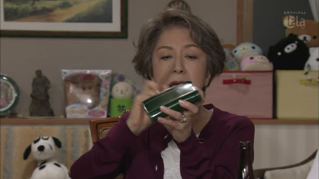

いくつ

Border · Episode 5
娘さんは おいくつですか？
"How old is your daughter?"
いくつ asks how many, for things you count with ひとつ, ふたつ... It also asks how old someone is.
On this card, someone asks how old a person's daughter is. お in front, おいくつ, is the polite way to ask an age.
Casual: いくつ？ on its own.

Kekkon Dekinai Otoko · Episode 2
その方って おいくつ？
"How old is that person?"
The casual form: no です at the end. On this card, she asks about someone she has just heard of: "that person, how old?" おいくつ still sounds soft.
Quick Examples
At a bakery with a friend, looking at the melon pan.
これ、いくつ買う？
"How many of these should we get?"
The answer is a ～つ number: ひとつ, ふたつ, みっつ.
CasualA café worker, holding the sugar.
お砂糖はいくつ入れますか？
"How many sugars would you like?"
いくつ sits right before the verb, no particle, the same spot as a number: ふたつ入れます.
PoliteYou crouch down to talk to a little kid.
いくつ？
"How old are you?"
The kid holds up fingers: みっつ! いくつ is the soft way to ask a child's age.
CasualChatting with an older neighbour.
失礼ですが、おいくつですか？
"If you don't mind me asking, how old are you?"
お in front makes it polite. This is how you ask an adult.
PoliteCounting chairs before guests arrive.
椅子、いくつある？
"How many chairs are there?"
For people, it's 何人 instead: 何人来る？ "How many people are coming?"
CasualWith and without
りんごをみっつ買いました。
"I bought three apples." You already know how many.
りんごをいくつ買いましたか？
"How many apples did you buy?" Swap the number for いくつ, add か.
Examples from Media

Border · Episode 4
おいくつですか？
"How old are they?"
おいくつですか: the polite way to ask someone's age.

Shirokuma Cafe · Episode 49
失礼ですけど、おいくつ？
"Excuse me for asking, but how old are you?"
おいくつ is the polite way to ask someone's age.
Dungeon Meshi · Episode 6
なら いくつなの？
"Then how old are you?"
He says he's not a child, so she asks his age.
Goblin Slayer · Episode 4
呪文はいくつ残っている？
"How many spells do you have left?"
いくつ counting things: how many spells.
Kotaro Lives Alone · Episode 1
君 歳はいくつだえ？
"How old are you?"
歳はいくつ: "your age is how many". Kotaro talks in an old-fashioned way: だえ is だ.
Slam Dunk · Episode 20
桜木君 サイズいくつ？
"Sakuragi, what's your size?"
Shoe size: サイズはいくつ, the は dropped.
Vinland Saga · Episode 20
あのヒゲの？ 若いな！ いくつだよ？
"The one with the beard? He's young! How old is he?"
いくつだよ: rough, casual.
Kekkon Dekinai Otoko · Episode 10
えっ おいくつくらいの方？
"Huh, about how old is she?"
いくつくらい: "about how old".